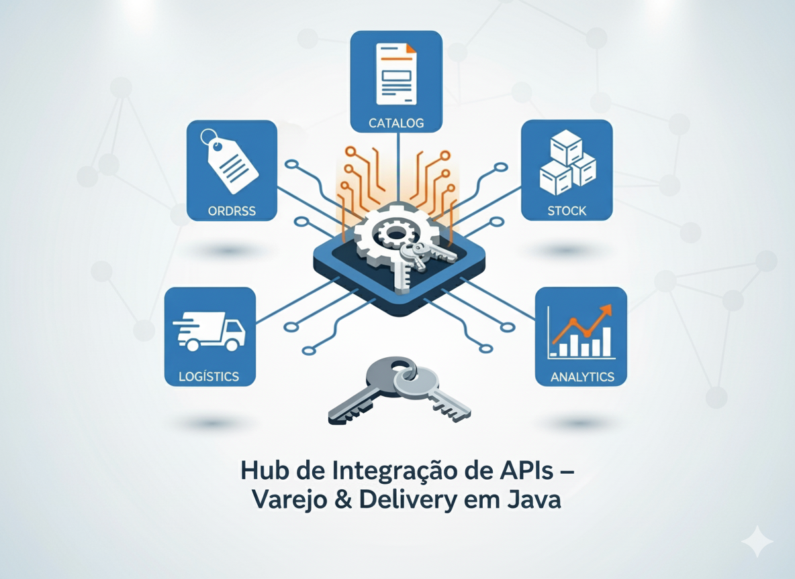

Hub de Integração de APIs para Varejo & Delivery — uma visão prática em Java

Integração unificada de pedidos, catálogo, estoque e logística.
Por que o varejo brasileiro precisa de um “único lugar” para integrar tudo
Nos últimos anos, o ecossistema de vendas e entregas no Brasil se fragmentou: marketplaces (Magalu, Mercado Livre, Amazon, Shopee), apps de delivery (iFood, Rappi, Cornershop), e-commerces próprios, ERPs, TMS e last-mile. O resultado? Custos altos de integração, dados dispersos e decisões lentas.
A tese deste artigo é simples: há espaço para uma startup de Integração de APIs (um hub) que unifique pedidos, catálogo, estoque e logística em uma API única — começando enxuto (MVP), mas pronta para escalar. E dá para fazer isso em Java, com um stack moderno, resiliente e observável.
O problema (em 5 linhas)
- Cada canal tem sua própria API, contrato e SLA;
- Lojistas e redes gastam tempo “traduzindo” dados;
- Ruptura por falta de sincronização de estoque;
- Duplicidade de integrações entre times e fornecedores;
- Falta de visão unificada (KPIs, margem por canal, O2O).
Oportunidade: oferecer uma API única e conectores prontos para os principais players, reduzindo time-to-market e aumentando a confiabilidade.
A proposta
Um SaaS B2B que centraliza integrações e expõe um contrato padronizado:
- Order Ingest: normaliza pedidos vindos de qualquer canal;
- Catalog & Stock Sync: SKU unificado, preço por canal, promoções;
- Logistics Orchestration: cotação, SLA, roteirização, tracking;
- Analytics: vendas por canal, fill rate, OTIF, cancelamentos;
- Console: painel para monitoração, alertas e gestão de chaves/API.
Modelo de negócio: assinatura por loja/filial + overage por volume de pedidos, com planos Basic/Pro/Enterprise.
Arquitetura de referência (Java)
- Edge/API Gateway: Spring Cloud Gateway + Rate Limiting (Redis)
- BFF/Orquestração: Spring Boot (WebFlux) para I/O reativo
- Conectores ("adapters") por parceiro: Spring Boot + Resilience4j (timeouts, circuit breaker, retries)
- Mensageria: Apache Kafka para ingestão assíncrona e event sourcing
- Persistência: PostgreSQL (OLTP) + Elastic (busca) + Redis (cache)
- Observabilidade: Micrometer + OpenTelemetry (traces/metrics/logs)
- Infra: Kubernetes, Horizontal Pod Autoscaler, 12-Factor
- Segurança: OAuth2/OIDC (Keycloak), mTLS entre serviços
- Contrato: OpenAPI 3.0, schema registry (Avro/JSON Schema) para eventos
Estilo arquitetural: Hexagonal (Ports & Adapters) + SAGA para coordenação de fluxos multi-serviço (ex.: pedido → reserva de estoque → pagamento → despacho).
Domínio mínimo viável (MVP)
Agregados:
Order(pedido unificado)CatalogItem(SKU, preço, atributos)Inventory(estoque por localidade/canal)Shipment(cotações, tracking, SLA)
Fluxos críticos:
- Receber pedido de qualquer canal → normalizar → publicar evento
order.createdno Kafka; - Reservar estoque → confirmar/cancelar;
- Despachar (selecionar transportadora, gerar etiqueta, tracking);
- Atualizar status (webhooks → eventos
order.updated).
Especificação de API (trecho)
openapi: 3.0.3
info:
title: Retail Integration Hub API
version: 1.0.0
paths:
/v1/orders:
post:
summary: Ingestão de pedido unificado
requestBody:
required: true
content:
application/json:
schema:
$ref: '#/components/schemas/UnifiedOrder'
responses:
'202': { description: Aceito e processado assíncronamente }
/v1/orders/{id}:
get:
summary: Consultar pedido
responses:
'200': { description: OK }
components:
schemas:
UnifiedOrder:
type: object
required: [channel, externalId, items, customer]
properties:
channel: { type: string, example: 'IFOOD' }
externalId: { type: string }
items:
type: array
items:
type: object
required: [sku, qty, price]
properties:
sku: { type: string }
qty: { type: integer }
price: { type: number, format: double }
customer:
type: object
properties:
document: { type: string }
name: { type: string }
address: { type: string }
Exemplo de implementação (Spring Boot WebFlux)
@RestController
@RequestMapping("/v1/orders")
@RequiredArgsConstructor
public class OrderController {
private final OrderIngestService service;
@PostMapping
public Mono<ResponseEntity<Void>> ingest(@RequestBody Mono<UnifiedOrder> body) {
return body
.flatMap(service::ingest)
.thenReturn(ResponseEntity.accepted().build());
}
@GetMapping("/{id}")
public Mono<UnifiedOrderView> get(@PathVariable String id) {
return service.findById(id);
}
}
Adapter para um canal (ex.: iFood/Rappi) com Resilience4j
@Component
@RequiredArgsConstructor
public class RappiAdapter implements OrderPullPort {
private final WebClient webClient;
@TimeLimiter(name = "rappi")
@Retry(name = "rappi")
@CircuitBreaker(name = "rappi")
public Flux<ChannelOrder> pullNewOrders() {
return webClient.get()
.uri("/partner/orders?status=NEW")
.retrieve()
.bodyToFlux(ChannelOrder.class);
}
}
Publicação no Kafka
@Service
@RequiredArgsConstructor
public class OrderIngestService {
private final KafkaTemplate<String, UnifiedOrderEvent> kafka;
private final OrderRepository repo;
public Mono<Void> ingest(UnifiedOrder order) {
return repo.save(order.toEntity())
.doOnSuccess(saved -> kafka.send("order.created", saved.getId(), UnifiedOrderEvent.from(saved)))
.then();
}
}
Segurança, LGPD e compliance
- PII minimizada: armazene somente o necessário, com tokenization para documentos e cartões;
- Criptografia: TLS em trânsito, AES-256 em repouso;
- Auditoria: trilhas de acesso (quem/quando/onde), retenção configurável;
- Consentimento: registre bases legais e finalidades (LGPD Art. 7º);
- Segregação de dados: multi-tenant com row-level security.
SLOs e observabilidade
- SLO ingestão: P95 < 500 ms no edge, P99 < 2 s no fluxo assíncrono;
- Disponibilidade: 99,9% (multi-AZ);
- KPIs de negócio: fill rate, tempo de ciclo, % cancelamento por canal;
- Alertas: erro por conector, latência por parceiro, dead letter queues.
Roadmap sugerido
Mês 1–2 (MVP): Ingestão de pedidos + conectores de 2 canais + webhook de status;
Mês 3–4: Catálogo/estoque unificado + conectores de logística;
Mês 5–6: Console self-service, chaves API, faturação, relatórios;
Enterprise: SAGA completa, rate cards de frete, roteirização e what-if pricing.
Diferenciais para o Brasil
- Conectores prontos para fiscais (NFe/NFCe/CFOP), meios de pagamento locais e split;
- Tratamento de endereços e CEP (geocodificação/normalização);
- Otimização para pico (datas sazonais e campanhas regionais);
- Suporte a lojas físicas (O2O: ship-from-store, click & collect).
Chamado à ação
Se você é do varejo ou logística e já cansou de “reinventar integração” a cada novo canal, vamos conversar. A ideia é construir um hub único, em Java, que reduza complexidade e acelere o go-live em semanas, não meses.
Curtiu a tese? Comenta aqui, envia DM ou marque alguém que precisa ler isso.